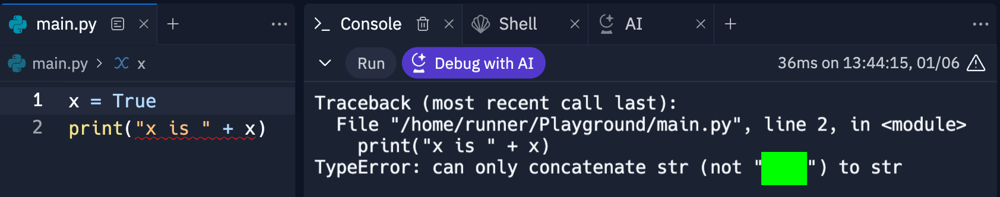

Complete Capture the Flag (CTF) activities below. You can check that you have the correct flags at the CTF link above. If you'd like to register your progress and to have your name appear on the leaderboard, you may opt to include your name when entering flags. As you capture flags and verify they're correct, keep track of them, so you can enter them into Canvas and earn class points toward your grade.
Then attempt the challenges below.
Put the answers to the questions above together, separated by pipes to build the flag. For example, if the answers were a, b, c, d, then enter a|b|c|d to get the flag. The pipe is above the return/enter key on standard keyboards. Note that this flag is not in the corresponding Canvas submission form.
What gets stored in x in each of the following cases?
x = 2 * 4
x = 3 + 2 * 4
x = 4 / 2
x = 5 / 2
x = 5 // 2
x = 5 % 2
x -= 2 # if x is 7 prior to executing this statement
Put the results of the calculations on each line above together, separated by pipes to build the flag. For example, if the results were 5, 2, 3, 4, 1, then enter 5|2|3|4|1 to get the flag. Recall that you can use print to display the value stored in a variable. HINT: You'll need to add an extra statement above x -= 2 setting x to 7.
num = gb(input("Please enter an integer: "))
print(num+2)
add2 = num + 2
print(gb(num) + " + 2 is " + gb(add2))
What is under the 3 green boxes? Build the flag from them with pipes between each. Work from left to right, top to bottom.
In addition to integers (e.g., -2, 9, etc.) and real numbers (e.g., 2.7), Python can store booleans (e.g., True, False) values. As we saw with numbers, it can't catenate a boolean value to a string directly and display it. The code below WON'T work.
x = True
print("x is " + x)
What compile time error message does the code above generate? The flag is under the green box.

How can you fix the code above, so it will work? The flag is under the green box.
x = True
print("x is " + gb(x))
Put the answers to the questions above together, separated by pipes to build the flag.
To generate a random number between 5 and 10, what values need to be under the green flags in the code below? Build the flag from them by putting a pipe between the three values.
value = random.gb(gb, gb)
The code below subtracts the number stored in the variable x from 7, stores it in the variable y, then displays y. It has one or more errors. See if you can find them.
x = 5
7 - x = y
print("y = " + str(y))
After you've debugged the code above and gotten it to work, submit it to this code checker to get the flag.
The code below simulates a six-sided die using random. It has one or more errors. See if you can find them.
# Define min and max values MIN = 1 MAX = 6
# Get random value. Note randint is in the random library die = randint(MIN, MAX)
# Display result
print("Your roll was " + str(die) + ".")
After you've debugged the code above and gotten it to work, submit it to this code checker to get the flag.
Write a program which reads in a temperature in Fahrenheit, converts it to Celsius, and displays the result. The formula is C = (F – 32) * 5/9. Below is an example run where the user enters 54.
You're program should be able to accept real numbers like 17.3 input by the user as well.
After you've gotten the program to work, submit it to this code checker to get the flag.
Write a program which rolls two dice and displays their sum. Create two random numbers between 1 and 6 for the two dice. Each time the program runs it should have new numbers. Below is an example run.
After you've gotten the program to work, submit it to this code checker to get the flag.
Write a program which reads in a value between 1 and 99 and tells you how many each of quarters, dimes, nickels, and pennies would add to that value. You should use as few total coins as possible. HINT: You can use integer division to see how many coins you need for a given coin type (e.g., 25 cents, etc.), and you can use modulus to see how much money is left after removing them. For example, $0.87 is 3 quarters with $0.12 left over. Then $0.12 is 1 dime with $0.02 left over, and $0.02 is two pennies. Below are example runs where the user enters 92 and 17, respectively.
After you've gotten the program to work, submit it to this code checker to get the flag.